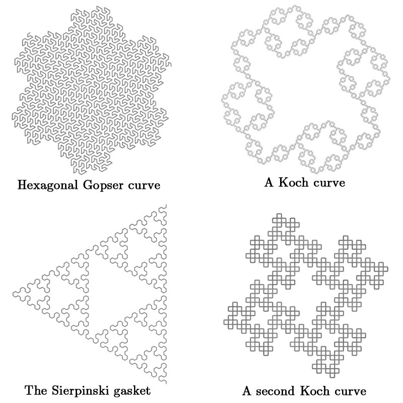
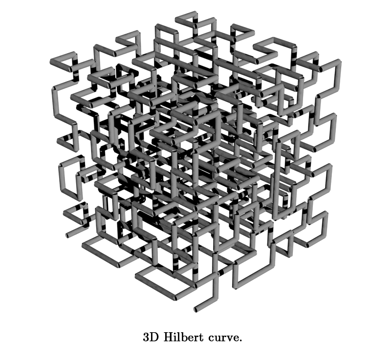
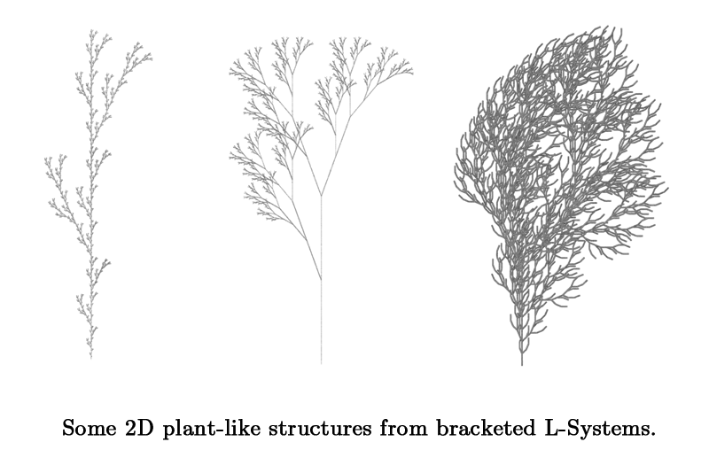
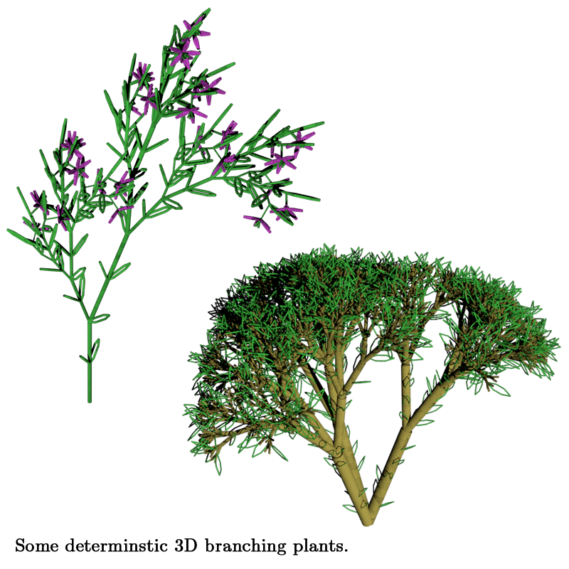
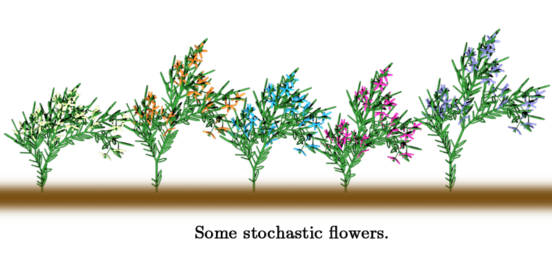

{kind=link}

Allen Pike (apike@sfu), Fall 2007
Plants are relatively difficult to model convincingly, but Lindenmayer Systems (L-Systems) have been very successful at doing so. L-Systems are formal grammars that can be interpreted as determining the movements of a turtle drawing algorithm. I implement a plant and tree modeler using L-Systems and the pbrt raytracer that supports 3D systems, branching, randomization, and some custom additions to improve realism.
Plants are a common part of everyday life, but are very difficult to model convincingly by hand. In nature, trees each have specific growth patterns and subtle variations that make them look real. A very popular tool for modeling these types of plants are Lindenmeyer Systems, or L-Systems. L-Systems are a type of formal grammar that define a process of iterative replacement, where at each step the entire grammar replaces the entire working set in parallel, as opposed to a language being defined in sequence. With these one can create models of a very wide variety of plants in an adaptable way.
This project implements some of the techniques for modeling plants in pbrt using L-Systems. L-Systems were developed by Prusinkiewicz and collaborators at the University of Calgary. They discuss using L-Systems to define the movement of a LOGO-like turtle drawing algorithm. The alphabet of the L-Systems define different actions the drawing turtle can take. The L-System is then expanded into a full set of drawing instructions, which are then followed. By adding parameters to the grammar, the L-Systems can model higher-level plants like trees, as opposed to simple algae. Initially a 2D implementation was developed, but 3D plants can be modeled by increasing the number of parameters from 3 to 7. Additionally, a stochastic element can be applied to some of the elements in the grammar, which can make each model's details nondeterministic. This makes modeling a forest of plants possible, with each one having subtle and interesting variations.
The plan was to implement L-Systems as a shape plugin in pbrt. This would allow you to define a L-System in a .pbrt scene file, as well as any other scene settings, and have pbrt render the output. The plant was to first render simple 2D L-Systems, evolving to support more parameters and more realistic plant models iteratively.
The first iteration of my system was able to create various fractal-like 2D and 3D L-Systems. The rules are specified in terms of rotation parameters (+, -, &, ^, \, /, |) and the symbols F or f for forward movement. This amount of complexity is sufficient to simulate the growth of algae, but not higher plants. Below are some example outputs.


The branching extension to L-Systems allows them to simulate plant-like structures, instead of simple fractals and algaes. It works by pushing onto a stack when a branch is started with "[", and popping back when the branch is ended with "]". The systems shown here have the complexity of seaweed or other simple plants.

For the 3D plant models, I added colour, simple leaves, and varying trunk thickness to my branching plants. In this implementation, the branches get thinner by a ratio, defined as part of the L-System, each time they split.

For a group of plants to look realistic, they need to have random attributes. According to Prusinkiewicz, adding randomization to the system rules is more effective than randomizing the interpretation, so I added randomization parameters to the rules. Multiple productions can be assigned to each definition, with a percentage likelihood for each production. I also added the ability to specify a list of colours, and the system will pick one for each flower. All these flowers were generated from the same L-System, generated five times.

The plant L-System wasn't treelike enough for my taste. I set out to improve the realism, which was more time-consuming than I expected. I first changed the leaves so they were filled shapes instead of outlines, and also added randomization to the angle and size of each leaf. I then modified the L-System to removed the leaves from the trunk portions of the tree, and created textures for the leaf and bark surfaces. Another improvement I made was modifying the branching so that the branches' origins are slighly inside their parent, rather than starting a the same point the parent terminated. The original definition allowed you to see cracks between the cylinders that make up the tree segments, but now the tree appears smooth. I also did a high resolution render of this model.
Implementing an L-System shape plugin proved more difficult than I expected. One problem is that shapes can't have more than one type of material. Another problem is that it's awkward to define rotations and translations in a shape definition, rather than in a scene. I could have opted for implementing the entire plant as a triangle mesh, but that would have created unnecessary work compared to using cylinders. I came to realize that to get the functionality I wanted, an entirely new type of plugin, or possibly hacks to the pbrt core would be needed. Another issue was that if you generate a non-deterministic figure that you like and want to keep, it's gone forever.
After enough frustration with my initial approach, I decided to write a pbrt scene file generator in a higher-level language. C++ is not as well suited to string manipulation as many higher-level languages are. This approach acheived exactly the same output in pbrt, but allowed more flexibility without hacking the guts of system. I spent some time learning Python, since I have heard great things about its ability to deal with exactly these sorts of problems. I translated the C++ code I had so far into Python as a starting point, and from then on was a lot more productive.
Another issue I came accross was that at larger resolutions on certain scenes I would get a fatal error from pbrt. The error is "Fatal Error: Assertion "f!=0" failed in core/geometry.h, line 52", and it would occur deterministically after a few minutes of rendering. This was a case of one ray in a million causing a division by zero, which is enough to halt an entire render. I suspect this is due to floating point inaccuracy, but it's hard to tell. It tended to come up when there was a lot of empty space in the scene. For a workaround I just changed the rays that caused this error to return black, and it had no visible effect.
To use my scene generator, lsystem.py, you first define the L-System you'd like to model at the head of the Python file. This is a simple process, but in the future I'd like to add either a simple file format or command-line parameters to define the L-Systems. Once the system is defined, you can run the generator by calling python lsystem.py | lsystem.pbrt, where lsystem.pbrt is the name of the scene file that will be generated. Then you can include that scene file in a full-fledged pbrt scene, such as this trivial example. Then, simply render the scene file as usual in pbrt.
Especially considering my false start with C++, I think I got quite a long way towards realistic plants from simple fractal L-Systems. That said, there are a lot of additional features L-Systems can have that give more flexibility and add additional realism. The feature I would like most to implement is parametric L-Systems. Implementing it properly would be somewhat tricky, but would be able to produce full axial trees like you see in nature. The models in the literature are very compelling, and I'm considering continuing work on my L-System modeler to be able to generate some of them.
Here is a PDF version of the presentation I gave on this project.